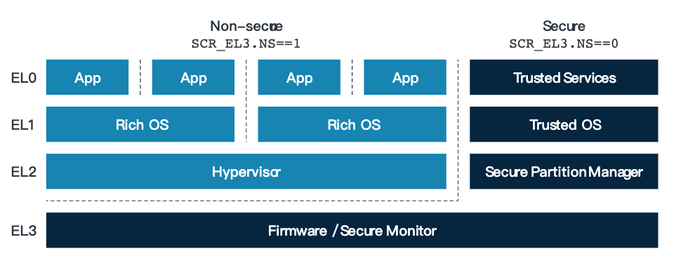
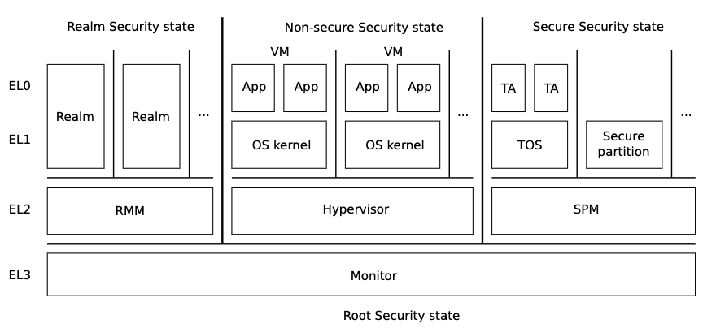

[arm] RMM
overflow
RMM 是一个系统软件（固件）器和 RME (hardware extension) 一起构成实现了 ARM Confidential Compute Architecture(CCA) 用来提供受保护的可执行环境 Realms.
Confidential Computing
Armv8-A 通过建立了如下图的权限层次结构:

该层次结构的逻辑是，让高权限等级去管理权限异常等级使用的资源，并且资源管理和访问 权限是绑定在一起的。
举个例子: EL2&1 中 EL2 用来分配为EL1分配物理页，在 EL1&0 中EL1为EL0分配虚拟机认为 的物理页。并且低权限等级不能访问高权限等级的资源: guest user space(el0) 不能访问 guest kernel (el1)的内存，guest kernel (el1) 不能访问host（el2）的内存。 反过来则可以（例如, host 可以访问虚拟机的)
这个是在纵轴层级上，而在横轴层级上，secure mode 比 non-secure mode 权限高, 所以, secure world 可以访问Non-secure world的PAS，反之则不可以。(虽然non-secure world的资源不受 secure world的管理)。其关系上更像是单侧隔离的关系。
而ARM CCA 则打破了这种绑定, 可以让低权限的软件，去管理高权限的资源。(Non-secure world VMM 管理 Realm).

这样，可以正好的整合进云场景中: 在云场景下，虚拟机资源的生命周期(创建，运行，迁 移,销毁) 均由VMM控制，但是虚拟机实际上是客户的，其虚拟机中运行的程序，磁盘上的内 容不想让host获取到。那么，就需要虚拟机运行到高权限的环境，但是其资源却需要低权限 的VMM进行管理。
RMM
而怎么能让低权限软件访问高权限资源呢?
提供接口。就像是用户态程序通过系统调用享用内核的为其创建的资源。例如各种类型 的fd。虚拟机也可以通过电源管理接口 trap 到EL2，享用一些hyp的一些半虚拟化的服务 等等。
在CCA的架构中，接口由RMM实现。
我们来看下:
RMM 职责:
- Provide services that allow the Host to create, populate, execute and destroy Realms.
- Provide services that allow the initial configuration and contents of a Realm to be attested.
- Protect the confidentiality and integrity of Realm state during the lifetime of the Realm.
- Protect the confidentiality of Realm state during and following destruction of the Realm.
可以看到, RMM的职责除了转发 Host 对 Realm 生命周期的管理操作之外，还需要确保 Realm 的机密性与完整性。另外，提供一个服用来验证Realm的初始配置和Realm的初始 内容(这个是guest关心的)
为了实现上面的职责, RMM 提供了如下接口:
- TO HOST:
- Realm Management Interface (RMI): for the creation, population, execution and destruction of Realm
- TO Realm
- Realm Services Interface (RSI): manage resources allocated to the Realm, and to request an attestation report
- PSCI: control power states of VPEs within a Realm.